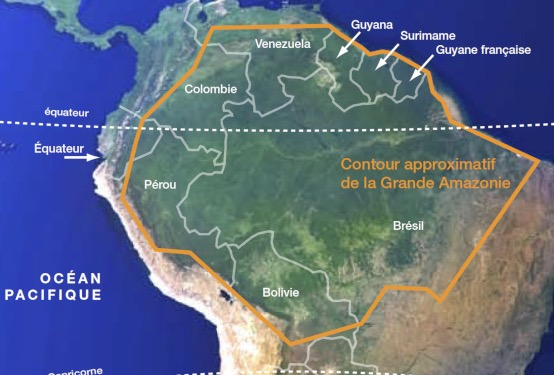

Plan du module
Sommaire
01→
Situer l'Amazonie
Délimitations géographiques, politiques et écologiques — ce que couvre vraiment ce mot
02→
Déconstruire les mythes
Pourquoi « l'Amazonie n'existe pas » au sens strict — et ce que ça change pour votre mission
03→
Comprendre la révolution scientifique
Les découvertes récentes qui bouleversent notre vision d'une forêt « vierge »
04→
Saisir les 4 éléments de Rostain
Eau · Terre · Feu · Air — le cadre d'analyse de Stephen Rostain pour lire le territoire
01
Partie 01 · Situer l'Amazonie
L'Amazonie, c'est quoi ?
Délimitations · Mythes · Réalités scientifiques
01 · Situer l'Amazonie
Délimitation géographique
Bassin versant amazonien
L'ensemble des terres dont les eaux se déversent dans le fleuve Amazone — env. 7,7 millions de km²
Forêt tropicale amazonienne
La couverture forestière stricto sensu, qui déborde du bassin et s'étend sur 9 pays — env. 5,5 millions de km²
Définitions officielles
9 pays la revendiquent, chacun avec ses propres frontières administratives — aucune définition ne fait consensus
« Even getting basic numbers is not as easy as you might think — numbers conflict in confusing ways because of slight differences in the way people define ecosystems. »
— NASA Earth Observatory / V. Zalles, Univ. of Maryland, 2019
9
pays
partagent l'Amazonie
7,7 M
km²
de bassin versant
~60 %
de la forêt
tropicale mondiale
01 · Situer l'Amazonie
Se représenter l'échelle

× 2l'Europe (hors Russie)
≈l'Australie
7
Bassin hydrographique
Millions de km²
7,7
Biome étendu
Millions de km²
5
Limite administrative
Millions de km²
→ Explorez sur The True Size of… — glissez l'Amazonie sur la carte du monde
01 · Situer l'Amazonie
Le fleuve Amazone
6 400
km
de longueur, 2ᵉ au monde
20 %
des eaux douces planétaires
1 000+
affluents
325 km
de large à l'embouchure

Aucun pont ni barrage ne traverse le fleuve · Découverte de la source en 2014
01 · Situer l'Amazonie
Biodiversité : quelques chiffres
1/5
des espèces terrestres de la planète
40 000+
espèces de plantes recensées
1 300+
espèces d'oiseaux
3 000+
espèces de poissons d'eau douce
430+
espèces de mammifères
2,5 M
espèces d'insectes estimées
30+ millions d'habitants — dont des centaines de peuples autochtones et plusieurs dizaines de tribus isolées sans contact
Source : NASA Earth Observatory, 2019
01 · Situer l'Amazonie
9 pays, une seule forêt
PART DE LA FORÊT AMAZONIENNE TOTALE
Brésil59 %
Pérou ★13 %
Bolivie8 %
Colombie7 %
Venezuela6 %
% DU TERRITOIRE NATIONAL COUVERT
Guyane fr.97 %
Bolivie66 %
Suriname94 %
Pérou ★60 %
Guyana87 %
Brésil49 %
Équateur48 %

★ destination de votre mission · Sources : RAISG — Amazonia Under Pressure (2020) · WWF Living Amazon Report · FAO Global Forest Resources Assessment
01 · Situer l'Amazonie
Un climat hétérogène
RÉPARTITION DES TEMPÉRATURES

MOYENNE & RÉPARTITION DES PRÉCIPITATIONS

01 · Situer l'Amazonie
L'Amazonie, régulateur climatique mondial
Les rivières volantes
Fleuves atmosphériques
La transpiration des arbres pompe d'énormes quantités d'eau dans l'atmosphère. Ces « rivières volantes » transportent l'humidité jusqu'au centre du Brésil et au Rio de la Plata, alimentant la moitié des pluies de la région.
50 %
des pluies amazoniennes viennent des arbres eux-mêmes
Un puits de carbone géant
Carbon sink
La forêt absorbe le CO₂ et le stocke dans sa biomasse, régulant le climat planétaire. La déforestation ne détruit pas seulement des arbres — elle libère ce carbone accumulé sur des siècles.
~150 Gt
de carbone stocké dans la biomasse forestière
Le fleuve souterrain
Rio Hamza — découvert en 2011
À ~4 km de profondeur coule un fleuve invisible : le Rio Hamza. Découvert par le géophysicien Valiya Hamza (INPE, Brésil), il s'écoule sous l'Amazone, presque aussi long mais bien plus lent.
~4 km
de profondeur sous le fleuve Amazone
01 · Situer l'Amazonie
Réserve Nationale de Pacaya — Loreto

20 800 km²
La plus grande réserve nationale du Pérou — 2ᵉ en Amazonie
Confluent
Entre les fleuves Ucayali et Marañón, qui forment ensemble l'Amazone
Forêt inondable
La várzea — écosystème unique qui se noie 6 à 8 mois par an
02
Partie 02 · Déconstruire les mythes
Déconstruire les mythes
« La forêt vierge d'Amazonie n'existe pas »
— Stéphen Rostain, CNRS 2021
02 · Déconstruire les mythes
Trois mythes à déconstruire
01MYTHE COLONIAL
La forêt vierge
« Intact depuis toujours »
L'Amazonie serait une forêt intacte, jamais touchée par l'homme. Ce mythe, né de l'arrogance coloniale, nie 12 000 ans d'occupation et de gestion humaine active du territoire.
02MYTHE SCIENTIFIQUE
Le paradis contrefait
« Sols trop pauvres »
Betty Meggers (1954) : les sols ferrallitiques amazoniens seraient une limite absolue au développement de civilisations. Toute société complexe était impossible.
03MYTHE COLONIAL
L'Eldorado
« La cité d'or »
Les conquistadors cherchaient El Dorado, une cité d'or fantastique. Ce fantasme a justifié l'exploration violente de l'Amazonie et la réduction en esclavage de ses habitants.
Source : Stéphen Rostain, La forêt vierge d'Amazonie n'existe pas, Humensis 2021
02 · Déconstruire les mythes
Mythe #1 — La forêt vierge intacte
LE MYTHE
« L'Amazonie est une forêt vierge, non touchée par l'homme »
- Les Européens qui « découvrent » l'Amazonie au XVIᵉ s. la décrivent comme une nature sauvage, sans civilisation notable
- La doctrine de la terra nullius (« terre de personne ») en découle : l'Amazonie serait vide, donc appropriable
- Ce mythe justifie encore aujourd'hui l'agro-industrie et l'extraction minière dans des « espaces vides »
- Il a légitimé l'esclavage, les déplacements forcés et la destruction des cultures indigènes
LA RÉALITÉ
12 000 ans d'occupation et de gestion humaine active
Terra preta : sols artificiellement enrichis sur des milliers de sites — preuve d'une agriculture intensive et intentionnelle
Géoglyphes (Acre) : formes géométriques de 100-300 m creusées dans la roche — organisation sociale colossale
Champs surélevés : agriculture hydraulique dans les plaines inondables, nourrissant des millions d'habitants
Cités-jardins : réseaux urbains reliés par des routes, révélés par le LiDAR sous la canopée
02 · Déconstruire les mythes
Pourquoi la forêt semblait « vierge »
90 %
des populations indigènes mouraient des maladies européennes
1 · XVIᵉ siècle
Les premiers Européens décrivent une Amazonie densément peuplée, avec cités et champs cultivés sur des centaines de km le long des fleuves.
2 · Effondrement
Grippe, rougeole, variole : 90 % des populations meurent en quelques décennies. Des millions d'hectares de champs et de villages sont abandonnés.
3 · XVIIᵉ–XVIIIᵉ s.
La forêt repousse sur les terres abandonnées. Les Européens qui arrivent ensuite « découvrent » une forêt en recolonisation naturelle. Ils l'appellent « vierge ».


Source : Rostain (2021) — Science Panel for the Amazon 2021, Chap. 9
02 · Déconstruire les mythes
Mythe #2 — Le paradis contrefait

BETTY MEGGERS — 1954
« Le paradis contrefait »
— Cette pauvreté des sols constituait une « limite écologique absolue » au développement de civilisations complexes
— Les sociétés restaient nécessairement petites, mobiles et simples — le déterminisme environnemental
— Les Andes, aux sols volcaniques riches, seraient le seul lieu possible pour de grandes civilisations
— Meggers a dominé le débat scientifique pendant 30 ans

ANNA ROOSEVELT & AL.
« Le cœur rayonnant »
✓ Roosevelt (1980s) : poteries datées à 8 500 av. J.-C. — les plus anciennes des Amériques
✓ Maïs retrouvé dans des sols jugés « impossibles » par Meggers — la réalité contredit la théorie
✓ Populations denses sur les rives des grands fleuves — confirmées par l'archéologie
✓ La terra preta prouve que les sols ont été intentionnellement enrichis par les populations
02 · Déconstruire les mythes
La terra preta — la preuve par les sols

La terra preta (« terre noire » en portugais) est un sol artificiel créé par les peuples amazoniens depuis des millénaires. Sa découverte a définitivement réfuté l'idée que l'Amazonie ne pouvait abriter de grandes civilisations.
Composition
Charbon de bois (biochar), os broyés, fragments de poterie et déchets organiques — intégrés intentionnellement sur des générations
Fertilité durable
Contrairement aux sols tropicaux qui s'épuisent vite, la terra preta reste fertile des siècles — voire des millénaires
Étendue
Des milliers de sites sur tout le bassin. Certaines couches atteignent 2 m de profondeur — occupation prolongée et intense
Héritage vivant
Ces sols sont encore exploités aujourd'hui. Le biochar s'en inspire directement : une innovation amérindienne millénaire
Source : Rostain (2021) — Science Panel for the Amazon 2021, Chap. 8 — Bruno Glaser & al. (Bayreuth University)
02 · Déconstruire les mythes
« L'Amazonie est un jardin géant façonné par 12 000 ans de travail humain »
Terra preta
+3 500
sites identifiés — sols anthropiques enrichis sur des siècles, répartis sur tout le bassin
Géoglyphes
+500
structures géométriques — formes parfaites jusqu'à 300 m, creusées à la main, visibles par satellite
Champs surélevés
> 100k
hectares aménagés — agriculture hydraulique intensive dans les plaines inondables
Domestication
85 %
des plantes utiles — manioc, maïs, cacao, hévéa, sélectionnés sur des millénaires
Population
8–10 M
habitants précolombiens — 10× les estimations de 1950, dont des cités de 10 000 à 100 000 hab.
Source : Rostain (2021) — Science Panel for the Amazon 2021 — Schaan, Heckenberger & al.
03
Partie 03 · La révolution scientifique
La révolution scientifique
La fin de la vision d'une forêt « vierge »
LIDAR · ARCHÉOLOGIE · ÉCOLOGIE HISTORIQUE · INTERDISCIPLINARITÉ
03 · La révolution scientifique
Archéologie amazonienne : cinq découvertes décisives
1970s

Le cœur rayonnant
D. Lathrap
L'Amazonie postulée comme centre de diffusion des cultures, non leur périphérie.
1990s

Poteries à 8 500 av. J.-C.
A. Roosevelt
Les plus anciennes des Amériques, dans des sols « impossibles » selon Meggers.
2003

Kuhikugu — réseau de cités
M. Heckenberger
20 villages connectés, 50 000 hab., routes, digues, palissades.
2010s

+500 géoglyphes
Iriarte · Rostain · Balée
Révélés par la déforestation, cartographiés par satellite. Formes de 100-300 m.
2018

Structures cachées
PACUNAM LiDAR
Le LiDAR révèle cités, routes et champs sous la canopée. Des millions de personnes.
Sources : Lathrap (1970) — Roosevelt (1991) — Heckenberger (2003) — Iriarte & al. (2018) — PACUNAM LiDAR Initiative (2018)
03 · La révolution scientifique
Kuhikugu : une cité amazonienne de 50 000 habitants
En 2003, l'archéologue Michael Heckenberger (Université de Floride) révèle dans la revue Science un réseau de 20 villages interconnectés dans le bassin du Xingu (Brésil) — une planification urbaine comparable aux villes médiévales européennes.
20
villages interconnectés
50 000
habitants au pic de la civilisation
1 000 km²
de territoire urbanisé et géré
Infrastructure — larges routes, places centrales, digues, palissades défensives.
Organisation sociale — réseau d'échanges, cérémonies collectives, transmission du savoir.
Continuité vivante — les Kuikuro vivent toujours dans le Xingu et collaborent avec les archéologues.


Source : Heckenberger & al., Science 2003 & 2008 — Rostain (2021) — Science Panel for the Amazon 2021
03 · La révolution scientifique
L'écologie historique : lire la forêt comme un texte
L'écologie historique étudie les interactions à long terme entre les humains et leur environnement. Elle a révélé que la forêt actuelle est une construction humaine autant que naturelle.
01
Forêts culturelles
William Balée (1989) : certaines zones sont plus riches en espèces utiles près d'anciens sites habités. La forêt porte l'empreinte de ses jardiniers.
02
Paysages cumulatifs
Chaque génération hérite d'un paysage façonné par les précédentes et y ajoute sa couche. L'Amazonie actuelle résulte de 12 000 ans de stratification humaine.
03
La distinction nature/culture est dépassée
En Amazonie, séparer « nature » et « culture » n'a pas de sens : la forêt, les sols, les espèces, les chemins — tout est co-produit par l'humain et l'écosystème.
04
Les savoirs indigènes comme source primaire
Les connaissances traditionnelles des peuples amazoniens ne sont pas de simples croyances — ce sont des données empiriques accumulées sur des millénaires.
03 · La révolution scientifique
Les géoglyphes de l'Acre : ingénierie précolombienne

+500
géoglyphes découverts
300 m
diamètre max.
11 m
largeur des fossés
2 000
ans d'âge estimé
Révélés par la déforestation
Les géoglyphes de l'état d'Acre (Brésil) sont restés invisibles des siècles sous la canopée. C'est paradoxalement la déforestation qui les a révélés — et les images satellites qui les ont cartographiés.
Que sont-ils ?
Formes géométriques creusées dans le sol, réalisées uniquement à la force humaine. Usage cérémoniel, astronomique ou de rassemblement — témoins d'une planification collective à grande échelle.
Source : Rostain (2021) — Denise Schaan, UFPA — Science Panel for the Amazon 2021
03 · La révolution scientifique
Ce que la révolution scientifique a changé
ANCIEN PARADIGME
XIXᵉ – milieu XXᵉ siècle
✗ Forêt vierge — jamais touchée par l'homme
✗ Sols trop pauvres pour des civilisations
✗ Peuples « primitifs » et nomades
✗ Population précolombienne : < 1 million
✗ Aucune ville, aucune architecture
✗ Amazonie = périphérie culturelle
NOUVEAU PARADIGME
Depuis 1990 — en cours
✓ Forêt anthropisée depuis 12 000 ans
✓ Terra preta : sols enrichis intentionnellement
✓ Civilisations complexes et durables
✓ Population précolombienne : 8-10 millions
✓ Villes, routes, champs, ingénierie hydraulique
✓ Amazonie = berceau de civilisations majeures
Source : Rostain (2021) — Science Panel Amazon 2021 — Roosevelt, Heckenberger, Iriarte, Balée
03 · La révolution scientifique
Ce que l'Amazonie a donné au monde
Les peuples amazoniens ont domestiqué et diffusé des plantes et techniques qui nourrissent et soignent des milliards d'êtres humains aujourd'hui — une dette immense, jamais reconnue ni compensée.
Manioc
il y a 10 000 ans
Domestiqué en Amazonie. Aujourd'hui aliment de base de 800 millions de personnes en Afrique, Asie et Amérique latine.
Cacao
il y a 5 000 ans
Boisson rituelle amérindienne devenue l'industrie mondiale du chocolat (400 Md$/an). Ses origines sont amazoniennes.
Hévéa
depuis des siècles
Le caoutchouc naturel a rendu possible la Révolution Industrielle — pneus, joints, équipements médicaux.
Pharmacopée
25 % des médicaments
Curare (anesthésiants), quinine (antipaludéen), copaïba, cat's claw — issus de plantes connues des guérisseurs indigènes.
Biochar
héritage terra preta
Au cœur de la recherche climatique mondiale : le biochar séquestre le CO₂ et régénère les sols épuisés.
Source : Rostain (2021) — Science Panel Amazon 2021, Chap. 15 — Clement & al. (2015)
04
Partie 04 · Le cadre de Stephen Rostain
Les 4 éléments de Rostain
EAU·TERRE·FEU·AIR
Deux visions du même territoire
04 · Les 4 éléments de Rostain
Les 4 éléments — deux visions opposées du même territoire
Gestion amérindienne (12 000 ans)
Exploitation occidentale (< 500 ans)
L'EAU
✓ Apprivoisée — canaux, champs surélevés, réservoirs, gestion des crues pour l'agriculture hydraulique
✗ Contrainte — barrages qui fragmentent les rivières, pollution au mercure, surexploitation pour l'irrigation
LA TERRE
✓ Enrichie — terra preta, biochar, polyculture, jachères tournantes maintenant la fertilité sur des siècles
✗ Dégradée — érosion massive par monocultures de soja, compaction par l'élevage, contamination par les mines
LE FEU
✓ Source de vie — brûlis contrôlés pour fertiliser les sols, chasser, régénérer la végétation utile
✗ Destructeur — incendies massifs pour défricher, 90 % d'origine humaine intentionnelle en 2020
L'AIR
✓ Géré — évapotranspiration entretenue par la couverture forestière, rivières volantes, puits de carbone
✗ Menacé — émissions de CO₂ par la déforestation, point de bascule vers la savane, dérèglement climatique
04 · Les 4 éléments de Rostain
Élément 1 · L'EAU
Apprivoisée pendant 12 000 ans
20 %
de l'eau douce liquide mondiale
219 000
m³/s — débit moyen du fleuve Amazone
× 7
le débit du fleuve Congo
75 %
de l'humidité recyclée par la forêt elle-même


Sources : WWF Living Amazon 2022 — Valeria Peres Muñoz / INPA — Clark Erickson, Univ. Pennsylvania — Rostain (2021)
04 · L'EAU — apprivoisée
Ingénierie hydraulique précolombienne
Champs surélevés dans les plaines inondables (camellones), canaux de drainage, réservoirs d'eau.
En Bolivie (Llanos de Mojos), des centaines de milliers d'hectares ont été aménagés.
Cette gestion de l'eau a permis d'alimenter des millions de personnes dans un écosystème capricieux, alternant crues et sécheresses.


Champs surélevés des Llanos de Mojos, Bolivie — Photo Google Earth
04 · L'EAU — apprivoisée
Les rivières volantes — régulation continentale

La forêt transpire chaque jour plus d'eau que le fleuve n'en déverse dans l'Atlantique.
Ces « rivières volantes » (fleuves atmosphériques) transportent l'humidité jusqu'à 3 000 km de distance et alimentent les pluies du Brésil central, de l'Argentine et du Paraguay.
Sans forêt amazonienne : sécheresses catastrophiques pour tout le continent.
04 · L'EAU — menacée
Menaces actuelles sur l'eau
La déforestation réduit l'évapotranspiration → les rivières volantes s'affaiblissent → sécheresses en cascade.
L'orpaillage illégal
déverse du mercure : 4-18× les seuils sanitaires dans les rivières.
412 barrages
projetés fragmentent les fleuves, bloquant les migrations de poissons essentielles aux communautés.
L'eau amazonienne est plus menacée que jamais.

04 · Les 4 éléments de Rostain
Élément 2 · LA TERRE
Enrichie pendant des millénaires
Les sols tropicaux amazoniens sont naturellement pauvres (ferrallitiques, acides). Pourtant, les peuples précolombiens ont transformé des milliers de sites en terres fertiles. Ce que Meggers croyait impossible est documenté par des milliers de prélèvements.
HÉRITAGE — LA TERRA PRETA
+3 500 sites
de petits jardins familiaux aux plateformes de plusieurs km²
2 m de profondeur
des millénaires d'occupation et d'enrichissement continu
Fertilité persistante
fertiles des centaines d'années après l'abandon — utilisés encore aujourd'hui
Composition intentionnelle
biochar, os broyés, poteries, matière organique

04 · LA TERRE — menacée
La destruction des sols

17 % détruits (+ 17 % dégradés)
Seuil critique estimé à 20-25 % : au-delà, basculement irréversible vers la savane (WWF 2022).
Élevage — 70 % de la déforestation
Soja et élevage bovin pour l'alimentation mondiale : le steak européen déforeste l'Amazonie.
Mining — contamination permanente
Mercure dans les rivières, destruction physique des sols sur des dizaines de milliers d'hectares.
Sources : Rostain (2021) — WWF Living Amazon 2022 — Bruno Glaser & al. (Bayreuth Univ.) — Science Panel Amazon 2021
04 · Les 4 éléments de Rostain
Élément 3 · LE FEU
Source de vie ou instrument de destruction
Le feu est au cœur de la relation entre les peuples amazoniens et leur territoire depuis des millénaires — outil de fertilisation, de chasse, de régénération. Aujourd'hui, il est devenu l'arme principale de la déforestation.
HÉRITAGE — LE BRÛLIS CONTRÔLÉ
Agriculture sur brûlis (swidden)
Technique millénaire : on brûle une parcelle de forêt secondaire pour libérer les nutriments. Après 2-3 ans, la parcelle est abandonnée et la forêt reprend.
Régénération intentionnelle
Les brûlis stimulent certaines espèces utiles (bambous, palmiers) et renouvellent les pâturages pour le gibier. Un outil de gestion écologique.
Brûlis et terra preta
Le charbon produit par les brûlis est l'ingrédient central de la terra preta — incorporé au sol, il augmente la fertilité sur le long terme.

04 · LE FEU — menacé
Les incendies industriels
90 % d'origine humaine
Les incendies amazoniens ne sont pas naturels : ils sont allumés pour défricher au profit de l'élevage et de l'agriculture industrielle.
+2 500 grands incendies (2020)
Dont 88 % au Brésil. 2019 : +84 % de foyers d'incendie par rapport à la moyenne décennale.
436 000 ha en 2021
de forêt primaire perdus aux seuls incendies. Contrairement à la secondaire, elle ne se régénère pas à l'identique.
Cercle vicieux : feu + sécheresse
La déforestation assèche le climat, ce qui rend la forêt plus inflammable, ce qui accroît les incendies.

Sources : WWF Living Amazon 2022 — INPE Brésil 2021 — Rostain (2021)
04 · Les 4 éléments de Rostain
Élément 4 · L'AIR
Régulateur du climat planétaire
200 Gt
de carbone stocké dans la biomasse
+0,3 °C
sur la température mondiale si tout était libéré
Puits de carbone mondial
La forêt absorbe et stocke 150 à 200 milliards de tonnes de carbone. Entièrement brûlée, ses émissions équivaudraient à plus de 10× les émissions mondiales annuelles.
L'air menacé — point de bascule
Des zones de l'est de l'Amazonie brésilienne émettent déjà plus de CO₂ qu'elles n'en absorbent. Trois sécheresses record (2005, 2010, 2015-2016) et des températures +1,2 °C : le signal d'alarme est mondial.

Module 1 · Terminé
L'Amazonie
réalités, imaginaires et héritages
PROCHAIN MODULE
Module 2 — Histoire & Archéologie de l'Amazonie